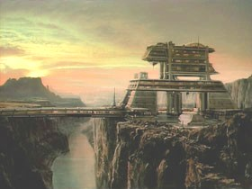

|
|
Darwin Genetic Research Station |
|
|||
|  |
Laboratorio federale che sperimenta modifiche genetiche tali per cui
possano crescere bambini con un sistema immunitario in grado di
attaccare e distruggere qualsiasi forma di malattia. Nel
2365
Sara Kingsley è a capo
del laboratorio Darwin.